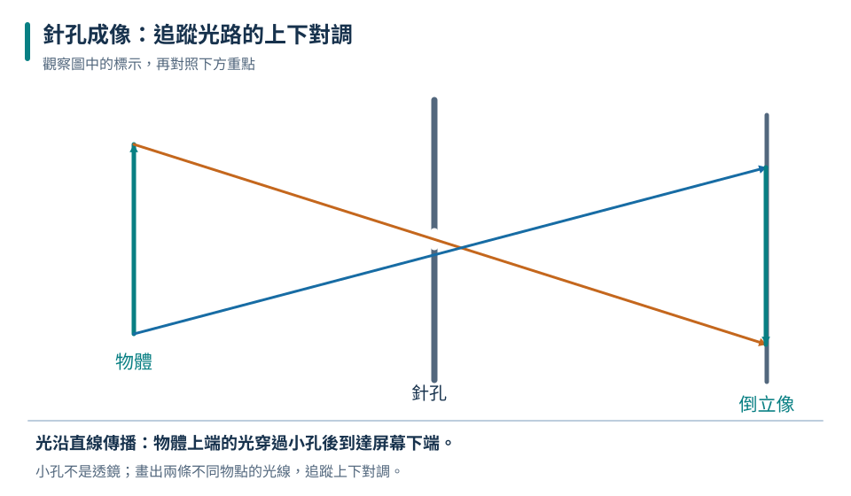
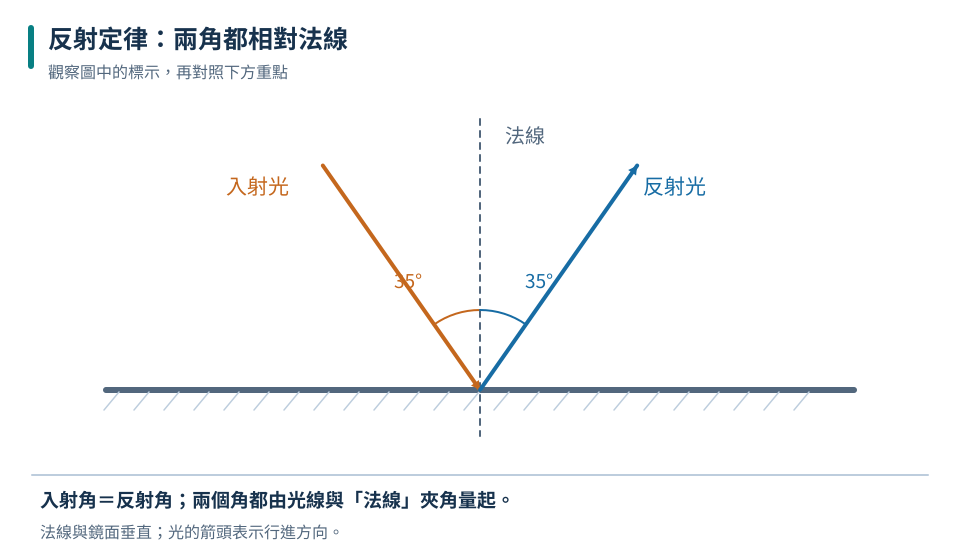
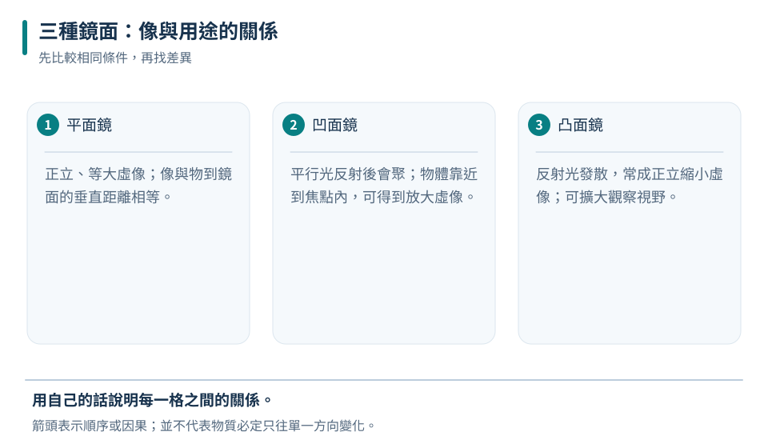
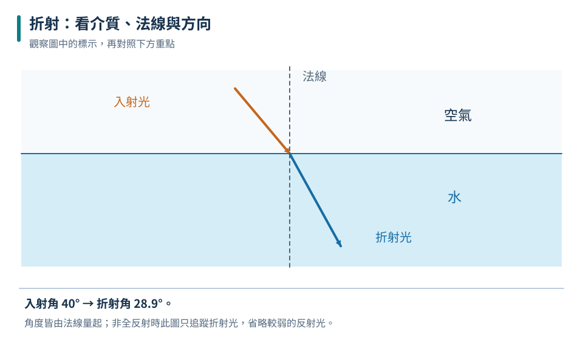
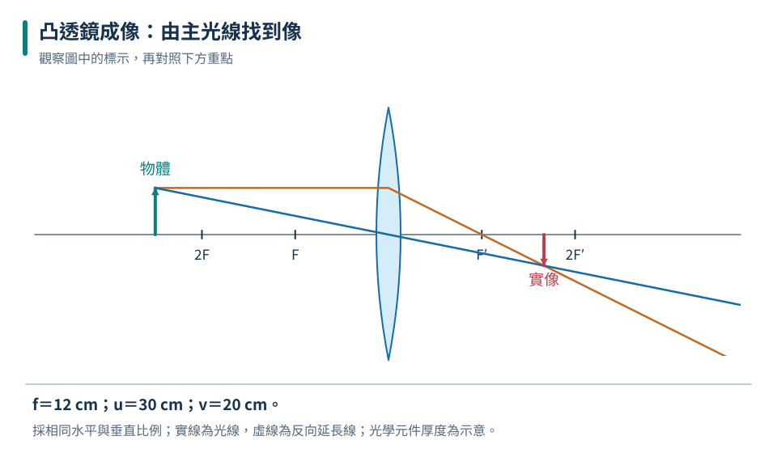
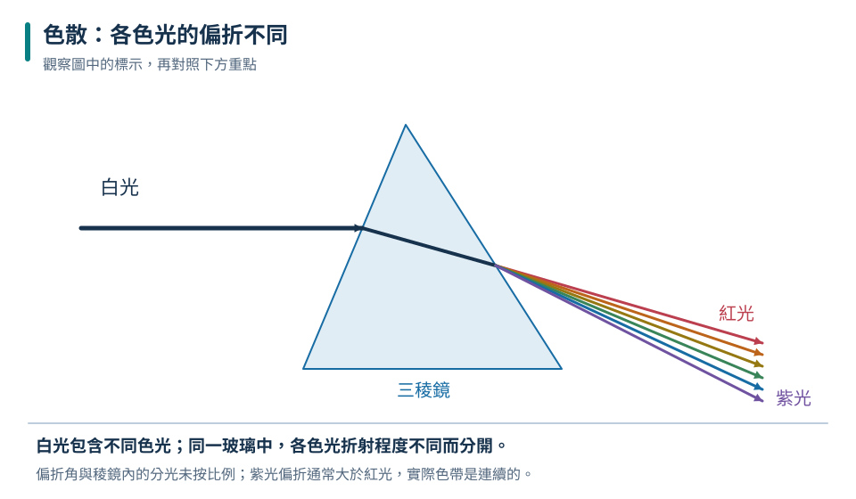
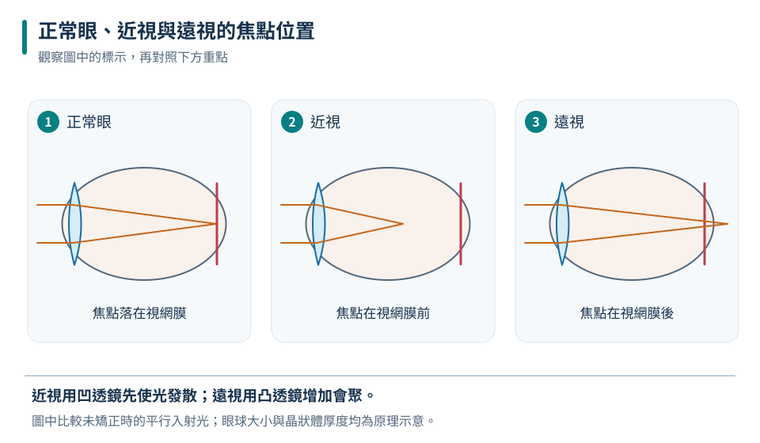

光源
能自行發光的物體，例如太陽、燈絲。月亮看得見是因為反射陽光，不是光源。
八上理化共同核心
從一束光走過的路徑開始，依序看懂反射、折射與透鏡成像，再把原理連到彩色螢幕、眼睛與各種光學儀器。
STRAIGHT-LINE TRAVEL

先追蹤圖中的物體與箭頭，再用本節概念說明它們的關係。
光在均勻、透明的介質中沿直線前進。影子、日月食與針孔成像，都是用光線直線行進就能解釋的現象。
能自行發光的物體，例如太陽、燈絲。月亮看得見是因為反射陽光，不是光源。
不透明物體擋住部分光線，在後方形成光線到不了的暗區。
物體各點發出的光交叉穿過小孔，在屏上形成上下、左右皆顛倒的實像。
針孔成像靠光的直進，不需折射；孔太大時，多組光線互相重疊，影像反而變模糊。
REFLECTION

先追蹤圖中的物體與箭頭，再用本節概念說明它們的關係。
入射角與反射角都要從「法線」量起；反射時兩角相等，而且入射線、法線、反射線位於同一平面。
互動反射鏡
拖動滑桿時，請觀察兩條光線如何以法線為對稱軸改變。
入射角35度，反射角也為35度。
先用 90° 減去該角，才是入射角。例如光線與鏡面夾 30°，入射角是 60°。
MIRRORS

先追蹤圖中的物體與箭頭，再用本節概念說明它們的關係。
| 鏡面 | 光線效果 | 成像／視野特色 | 常見應用 |
|---|---|---|---|
| 平面鏡 | 規則反射 | 正立、等大、左右相反的虛像 | 穿衣鏡、潛望鏡 |
| 凹面鏡 | 平行光會聚 | 依物距可成實像或虛像 | 車燈、化妝鏡 |
| 凸面鏡 | 反射光發散 | 正立縮小虛像，視野較廣 | 轉角鏡、後視鏡 |
眼睛把反射光沿直線反向延長，判斷它像是由鏡後發出；實際光線沒有在鏡後會聚，所以是虛像。
REFRACTION

先追蹤圖中的物體與箭頭，再用本節概念說明它們的關係。
光斜射進不同介質時，速率改變，方向通常也會改變；由空氣進水或玻璃時偏向法線，由水進空氣時偏離法線。
互動折射槽
光由空氣斜射入水，折射角小於入射角，因此偏向法線。
LENSES

先追蹤圖中的物體與箭頭，再用本節概念說明它們的關係。
中間厚、邊緣薄，使平行光會聚；可成實像，也可成正立放大虛像。
中間薄、邊緣厚，使光發散；對實物只成正立、縮小的虛像。
凸透鏡成像模擬
本模擬焦距 f＝12 cm；橫軸上的 F、2F 是解題的關鍵位置。
物距30公分，大於兩倍焦距，形成倒立縮小實像。
| 凸透鏡物體位置 | 像的位置 | 像的性質 |
|---|---|---|
| 物在 2F 外 | 另一側 F～2F | 倒立、縮小、實像 |
| 物在 2F | 另一側 2F | 倒立、等大、實像 |
| 物在 F～2F | 另一側 2F 外 | 倒立、放大、實像 |
| 物在 F 內 | 與物同側 | 正立、放大、虛像 |
LIGHT & COLOR

先追蹤圖中的物體與箭頭，再用本節概念說明它們的關係。
白光由多種色光組成。稜鏡使不同色光產生不同程度的折射；螢幕則用紅、綠、藍三原色的加法混合呈現顏色。
RGB 色光調色盤
色光採加法混合：三色都最強時接近白光；三色都沒有時為黑。
紅紙主要反射紅光。若只用藍光照射，它沒有紅光可反射，會看起來很暗，而不是仍然鮮紅。
VISION

先追蹤圖中的物體與箭頭，再用本節概念說明它們的關係。
遠近物體的光經眼球屈光系統調節，恰好成像在視網膜。
視網膜：倒立實像看遠時像落在視網膜前，常與眼軸過長或屈光力過強有關。
凹透鏡矯正看近時像傾向落在視網膜後，常與眼軸較短或屈光力不足有關。
凸透鏡矯正物體放在凸透鏡焦點內，看到正立放大虛像。
凸透鏡在感光元件上形成倒立實像，拍遠景時通常是縮小像。
物鏡先放大，再由目鏡進一步放大，觀察微小物體。
用物鏡收集遠方光線，再由目鏡放大視角。
INTERACTIVE LAB
先找出光路的關鍵線索。答錯時會留下題目並給提示，可以立即修正。
挑戰一
判斷情境主要由哪一種光現象造成。
選一個答案開始挑戰。
挑戰二
替生活任務選出最適合的鏡片或鏡面。
選一個答案開始挑戰。
REVIEW
均勻介質中光直線前進；反射時角度從法線量，入射角＝反射角。
平面鏡像距等於物距；光由疏入密偏向法線，由密入疏偏離法線。
凸透鏡依物距成不同像；凹透鏡對實物固定成正立縮小虛像。
色光三原色是紅綠藍；眼睛在視網膜形成倒立實像，近視用凹透鏡。
CHAPTER TEST
先獨立作答，再查看解析。答題紀錄只保存在這台裝置的瀏覽器中。